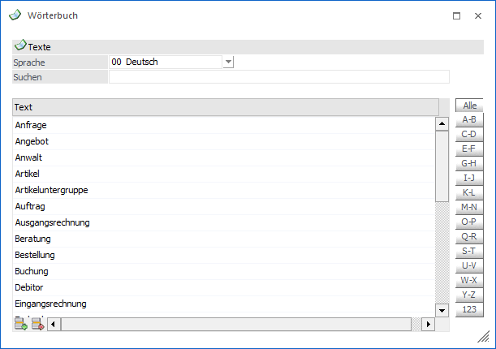
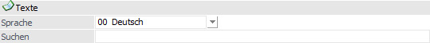
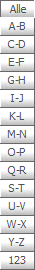
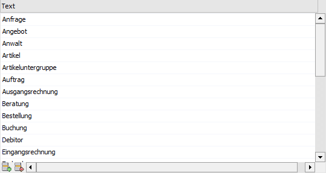
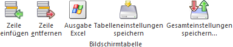
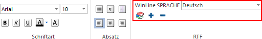
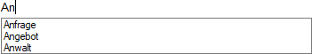
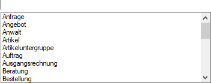

Über den Menüpunkt
1 WinLine START
1 Parameter
1 Wörterbuch
kann eine Liste von häufig benötigten Wörtern erfasst werden. Diese Wörter können dann in weiterer Folge mit der Autovervollständigungsfunktion in Multiline-Feldern (sogenannte RTF-Felder) verwendet werden. Damit wird die Erfassung von Texten (vor allen Textbausteinen) erleichtert.

Wenn der Menüpunkt aufgerufen wird, dann werden alle hinterlegten Wörter angezeigt, wobei folgende Funktionen zur Verfügung stehen:
Texte

Ø Sprache
Aus der Auswahlliste kann die Sprache gewählt werden, für welche das Wörterbuch erfasst werden soll. Standardmäßig wird die Sprache vorgeschlagen, in der das Programm gestartet wurden. Insgesamt stehen 20 Sprachen zur Verfügung, d.h. es müssen nicht nur Sprachen verwendet werden, die von der WinLine unterstützt werden.
Ø Suchen
In diesem Feld kann ein Suchbegriff eingegeben werden. Wird dieser Bestätigt wird, so werden in der Tabelle nur mehr jene Wörter angezeigt, welche dem Suchbegriff entsprechen (es erfolgt eine Volltextsuche).
Navigation

Ø "Alle" bis "123"
Durch Anklicken der Buchstaben-Buttons auf der rechten Seite kann eine weitere Einschränkung der Texte vorgenommen werden, wobei hier nach den Anfangsbuchstaben eingeschränkt wird.
Beispiel
Wird der Button "G-H" aktiviert, dann werden nur jene Wörter angezeigt, die mit dem Buchstaben "G" oder "H" beginnen. Durch Aktivieren des Buttons "Alle" (ist auch die Standardeinstellung) werden wieder alle Wörter angezeigt.
Tabelle "Texte"

In der Tabelle können die Wörter für die Autovervollständigung der Reihe nach erfasst werden. Die Reihenfolgen spielt dabei keine Rolle, die Wörter werden beim Speichern alphabetisch sortiert.
Tabellenbuttons

Ø Zeile einfügen
Durch Anklicken des Buttons "Zeile einfügen" gelangt man in die letzte Zeile der Tabelle, wo ein neues Wort hinzugefügt werden kann.
Ø Zeile entfernen
Durch Anklicken dieses Buttons wird das markierte Wort entfernt.
Ø Ausgabe Excel
Durch Anwahl des Buttons "Ausgabe Excel" wird der Inhalt der Tabelle an Microsoft Excel übergeben.
Ø Tabelleneinstellungen speichern
Die Spalten einer Tabelle können grundsätzlich an beliebige Positionen verschoben, bzw. in der Breite entsprechend angepasst werden. Durch Anwahl des Buttons "Tabelleneinstellungen speichern" werden die Einstellungen benutzerspezifisch gespeichert und bei dem nächsten Aufruf des Programmpunktes wieder vorgeschlagen.
Ø Gesamteinstellungen speichern
Im Gegensatz zu "Tabelleneinstellungen speichern" können mit "Gesamteinstellungen speichern" mehrere Tabellenaufbauten gespeichert und nach Wunsch geladen werden. Zusätzlich werden Sonderfunktionen der Tabelle (z.B. "Spalte gruppieren") ebenfalls bei der Speicherung bedacht.
Buttons

Ø Ok
Durch Anklicken des Buttons "Ok" bzw. der Taste F5 werden die Wörter gespeichert, wobei die Wörter alphabetisch sortiert werden.
Ø Ende
Durch Drücken des Buttons "Ende" bzw. der Taste ESC wird das Fenster geschlossen und alle nicht gespeicherten Änderungen verworfen.
Wie kann das Wörterbuch verwendet werden?
Wenn man sich in einem Multiline-Feld (auch RTF-Feld genannt) befindet, dann stehen im Ribbon "TEXTFORMATIERUNG UND TOOLS" diverse Text-Funktionen zur Verfügung, wobei einige einen direkten Zusammenhang mit dem Wörterbuch haben.

Ø  Wörterbuch
Wörterbuch
Durch Anwahl des Buttons "Wörterbuch" wird die Funktion der Autovervollständigung aktiviert. Das bedeutet, dass die WinLine anhand der eingegebenen Buchstaben versucht, das Wort aus dem vorhandenen Wörtervorrat zu vervollständigen.
Hinweis
Der Wörtervorrat kann neben der direkten Pflege während der Texterfassung auch im Programm WinLine START (Parameter - Wörterbuch) angelegt bzw. bearbeitet werden.
Ø Wort hinzufügen
Mit dieser Funktion können neue Wörter ins Wörterbuch eingefügt werden. Hierfür wird das gewünschte Wort wird im laufenden Text markiert und durch Anklicken des Buttons "Wort hinzufügen" in das Wörterbuch aufgenommen.
Ø  Wort entfernen
Wort entfernen
Mit dieser Funktion können Wörter aus dem Wörterbuch gelöscht werden. Hierfür wird das zu löschende Wort wird markiert und durch Anklicken des Buttons "Wort entfernen" aus dem Wörterbuch gelöscht.
Ø Wörterbuchsprache
Aus der Auswahlbox kann die Sprache gewählt werden, in welcher das Wörterbuch verwendet werden soll. Standardmäßig wird hier die Sprache vorgeschlagen, in welcher das Programm gestartet wurde, kann aber jederzeit geändert werden (wenn z.B. ein fremdsprachiger Text erfasst werden soll).
Unterstützung bei Texterfassung
Ø Autovervollständigung
Bei Aktivierung des Wörterbuchs werden passenden Wörter automatisch angezeigt und können per Pfeiltaste + Enter übernommen werden.

Ø STRG + Leertaste
Mit der Tastenkombination STRG + Leertaste wird eine Auswahlbox geöffnet, in welcher alle Wörter aus dem Wörterbuch angezeigt werden. Aus dieser Liste kann dann ein Wort ausgesucht und durch Drücken der Enter-Taste in das Eingabefeld übernommen werden.
